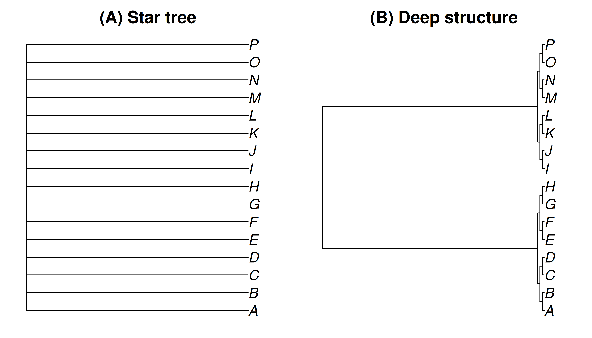
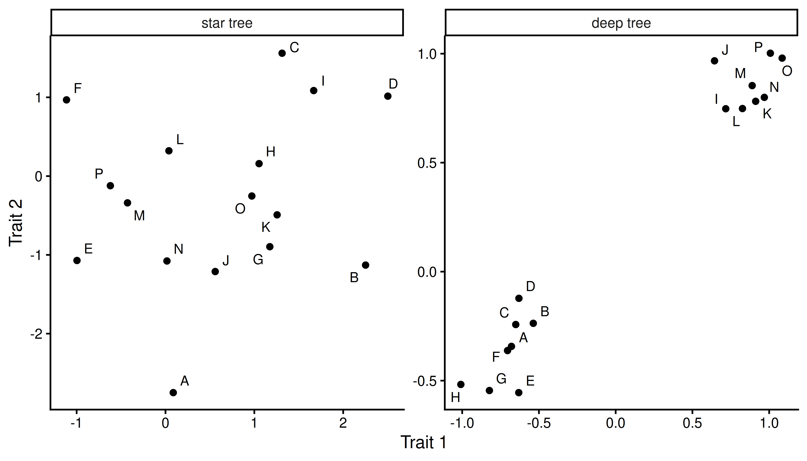
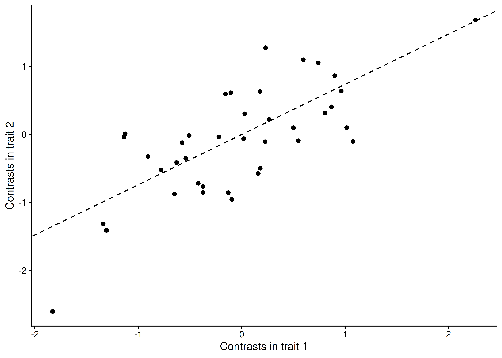

Chapter 12 Comparative methods
In the previous chapter we used the tree to look back in time and estimate the states of ancestors. Here we use the tree for a different purpose: rather than reconstructing particular historical states, we ask general questions about how traits evolve. This is the domain of phylogenetic comparative methods, one of the largest and fastest-growing areas of phylogenetic biology (Chapter 1). Its questions are wide-ranging, including whether two traits tend to change together, whether the rate of evolution differs across the tree, whether a trait is drawn toward some optimum, and many more topics. This chapter concentrates on the first and most common of them, the evolutionary correlation between two traits.
A recurring theme of phylogenetic comparative biology is that we cannot treat the tips of a tree as independent observations. Species are connected by a shared evolutionary history, and that history leaves a very specific statistical imprint on their trait values. Ignoring it leads to wrong conclusions and limits what questions can even be asked.
12.1 Species are not independent observations
Suppose we measure two traits across a set of species, say body mass and metabolic rate, and we want to know whether they tend to evolve together. The naive approach is to treat each species as an independent data point, plot one trait against the other, and fit an ordinary regression. This is exactly what we would do with independent samples in an introductory statistics course.
The problem is that species are not independent samples. Two species that diverged from a common ancestor a short time ago have had very little time to evolve apart, and so they tend to resemble each other on essentially every trait, simply because they inherited most of their features from that recent common ancestor. Two species whose lineages separated hundreds of millions of years ago have had far more opportunity to diverge. The tree tells us how much shared history each pair of species has, and therefore how much we should expect them to resemble one another before we invoke any relationship between the traits themselves.
This was the central insight of a landmark paper by Joe Felsenstein (Felsenstein 1985b). If we ignore the tree, we are effectively counting closely related species as if they were independent replicates, when in reality they are close to being a single replicate observed several times. Our sample size is inflated, our confidence intervals are too narrow, and we will routinely find “significant” relationships that are nothing more than the shadow of shared ancestry.
12.1.1 A simulation of the problem
We can see the problem directly by simulating traits that we know are not evolutionarily related, and then asking what an analysis that ignores the tree would conclude. To do this we need two trees that share the same tips but differ in how much history those tips share.

Figure 12.1: Two trees with the same sixteen tips, each scaled to the same root age. (A) A star tree, in which all of the evolutionary change happens on the terminal branches, so the tips share essentially no history. (B) A tree with deep structure, in which most of the change is shared along internal branches, so closely related tips share most of their history.
Figure 12.1 shows two trees over the same sixteen tips. In the star tree, every lineage descends independently from the root, so no two tips share any history beyond the root itself. In the tree with deep structure, most of the branch length is internal and shared, so sister tips are nearly identical by inheritance.
Now we simulate two traits on each tree under Brownian motion (Section 9.2), with no evolutionary covariance between them. Any apparent relationship between the two traits at the tips must therefore be an artifact of the tree, not a real association.

Figure 12.2: Two traits simulated independently under Brownian motion, with no evolutionary covariance between them, shown at the tips of the star tree and the deep tree. On the star tree the tips form an uncorrelated cloud, as they should for independent traits. On the deep tree, closely related tips (adjacent letters) cluster together, and this clustering can produce a strong apparent relationship between the two traits even though none exists.
Figure 12.2 shows the result. On the star tree, where the tips share no history, the two independent traits form the uncorrelated cloud we would expect. On the deep tree, sister tips (adjacent letters, such as A and B, or O and P) cluster tightly together in both traits at once, because they inherited both trait values from a recent common ancestor. These clusters can line up to suggest a strong relationship between the two traits even though we simulated them to be completely independent. An ordinary regression on the deep-tree tips, treating each species as an independent point, would happily report a relationship that does not exist. This is the phenomenon Felsenstein warned about, and it is why we need methods that account for the tree.
12.2 Phylogenetic independent contrasts
Felsenstein’s own solution to the problem was elegant, and it remains one of the clearest ways to understand and apply phylogenetic comparative methods (Felsenstein 1985b). Rather than write the non-independence down and correct for it all at once, he worked directly on the tree, from the tips toward the root, re-expressing the correlated tip values as a set of quantities that are independent under Brownian motion. The method builds on the ancestral character state reconstruction of the previous chapter.
Consider two lineages, \(i\) and \(j\), that descend from the same node, with observed trait values \(x_i\) and \(x_j\) and branch lengths \(v_i\) and \(v_j\). Their contrast is the standardized difference between them:
\[\begin{equation} c = \frac{x_i - x_j}{\sqrt{v_i + v_j}} \tag{12.1} \end{equation}\]
The numerator, \(x_i - x_j\), is the key. Because both lineages inherited the same value from their shared ancestor, that ancestral value cancels in the difference, leaving only the independent evolution that happened along the two branches since they diverged. The denominator standardizes the contrast: under Brownian motion the variance of the difference is proportional to \(v_i + v_j\), so dividing by \(\sqrt{v_i + v_j}\) puts contrasts taken across short branches and long branches on a common scale. The standardized contrasts then all have the same variance, and they are independent of one another.
Having taken the contrast at a node, Felsenstein pruned the two descendants from the tree and replaced them with their ancestor. He estimated the ancestor’s trait value as the inverse-branch-length-weighted average of its two descendants, \((x_i/v_i + x_j/v_j)/(1/v_i + 1/v_j)\)—the closer descendant counting for more—which is exactly the Brownian-motion ancestral state estimate (Equation (11.1)). Because that ancestor is now an estimate rather than an observation, its own branch is lengthened slightly, by \(v_i v_j / (v_i + v_j)\), to carry the extra uncertainty forward. With the pair collapsed to a single reconstructed tip, the same operation applies at the next node down, and so on until the root.
A rooted tree with \(n\) tips has \(n-1\) internal nodes and therefore yields \(n-1\) contrasts, one fewer than the number of species. This is the appropriate sample size for an evolutionary question. It reflects the number of independent opportunities for change on the tree, rather than the number of species, which overcounts because of shared ancestry.
To test whether two traits are evolutionarily related, we compute the contrasts for each trait separately and examine the relationship between the two sets. Because the contrasts are independent, an ordinary regression of one set on the other is now valid. By convention it is fit through the origin: the direction in which we happen to subtract each pair of descendants is arbitrary, so a contrast and its negative are equally valid, and only a line through the origin respects that symmetry.

Figure 12.3: Phylogenetic independent contrasts for two traits, computed on a tree with strong structure. Each point is a contrast at one internal node, comparing the two lineages that descend from it. Because the contrasts are independent under Brownian motion, an ordinary regression through the origin (dashed line) is a valid test of whether the two traits are evolutionarily related.
Figure 12.3 shows contrasts for two traits that were simulated with a genuine evolutionary covariance between them. Here the relationship in the contrasts is real, and the regression through the origin recovers it. The same procedure applied to the independent traits of Figure 12.2 would show no such relationship, because the shared ancestry that produced the spurious clustering has been differenced away.
12.3 The expected covariance structure
Independent contrasts handle shared history by transforming the correlated tip values into a set of contrasts that are independent under Brownian motion. There is another, complementary perspective. Instead of transforming the data to independence, it describes the shared history explicitly, as a covariance matrix among the tips.
Under Brownian motion, the trait values at the tips of a tree follow a multivariate normal distribution. The mean of that distribution is the root state, and the covariance between any two tips is proportional to the amount of evolutionary time they share, i.e., the distance from the root to their most recent common ancestor. This is intuitive: two tips accumulate the same random changes along every branch they share, and independent changes only after they diverge, so the more history they share, the more their trait values covary. A tip shares its entire root-to-tip path with itself, so its variance (its covariance with itself) is proportional to its total distance from the root.
We can read this expected covariance structure directly off the tree. Consider the small four-tip tree in Figure 12.4, drawn with its branch lengths.
![A four-tip tree drawn with its branch lengths; the horizontal axis is distance from the root. The covariance between two tips is the distance from the root to their most recent common ancestor---the internal node (gray) at which their lineages join. Sisters A and B join at the more recent node (distance 2), A and C (and B and C) join at the older node (distance 1), and D joins the others only at the root (distance 0). The variance of each tip is its total distance from the root, here 3 for every tip because the tree is ultrametric. These depths are exactly the entries of the covariance matrix in Equation \@ref(eq:comp-vcv).](phylogenetic_biology_files/figure-html/comp-vcv-tree-1.png)
Figure 12.4: A four-tip tree drawn with its branch lengths; the horizontal axis is distance from the root. The covariance between two tips is the distance from the root to their most recent common ancestor—the internal node (gray) at which their lineages join. Sisters A and B join at the more recent node (distance 2), A and C (and B and C) join at the older node (distance 1), and D joins the others only at the root (distance 0). The variance of each tip is its total distance from the root, here 3 for every tip because the tree is ultrametric. These depths are exactly the entries of the covariance matrix in Equation (12.2).
To turn this tree into a matrix, we take the tips two at a time and measure how much evolutionary history each pair shares. There are two kinds of entry. A diagonal entry is the variance of a single tip, and equals its total distance from the root—the full length of the path from the root out to that tip. An off-diagonal entry is the covariance between two different tips, and equals the length of the path they share: the distance from the root to their most recent common ancestor, the node at which their two lineages join.
Working through the tips of Figure 12.4:
- Every tip sits at distance 3 from the root, so every diagonal entry, the variance, is 3.
- A and B are sisters. Their lineages join at the more recent internal node, at distance 2 from the root, so the path they share—and therefore their covariance—is 2.
- A and C join further back, at the older internal node at distance 1 from the root, so their covariance is 1. The same holds for B and C.
- D branches off at the root itself, so it shares no path with A, B, or C, and all of its covariances are 0.
Collecting these values gives the phylogenetic variance-covariance matrix. We will call it \(\boldsymbol{\Sigma}\), a symbol kept deliberately distinct from the tip names, with one row and one column for each tip:
\[\begin{equation} \boldsymbol{\Sigma} = \begin{array}{cc} & \begin{array}{cccc} A & B & C & D \end{array} \\ \begin{array}{c} A \\ B \\ C \\ D \end{array} & \left(\begin{array}{cccc} 3 & 2 & 1 & 0\\ 2 & 3 & 1 & 0\\ 1 & 1 & 3 & 0\\ 0 & 0 & 0 & 3 \end{array}\right) \end{array} \tag{12.2} \end{equation}\]
The diagonal, running from top left to bottom right, holds the variances, all equal here because the tree is ultrametric. Every other entry is a covariance, and the pattern of large and small values mirrors the tree: closely related tips such as A and B share a great deal of history and have a large covariance, while the distantly attached D shares none and has covariances of zero. Reading across the row for D, or down its column, gives all zeros. This matrix is a complete description of the non-independence induced by the tree, and it is exactly what the next method takes as its input.
12.4 Phylogenetic generalized least squares
Independent contrasts turn out to be one instance of a more general and flexible framework. That framework is phylogenetic generalized least squares, abbreviated PGLS (Grafen 1989; Freckleton et al. 2002; Symonds and Blomberg 2014).
Ordinary least squares regression assumes that the residuals, the deviations of the data from the fitted line, are independent and identically distributed. Generalized least squares relaxes this assumption by allowing the residuals to have a specified covariance structure. And we have just built exactly such a structure: the phylogenetic variance-covariance matrix \(\boldsymbol{\Sigma}\) of Equation (12.2). In PGLS we fit a regression in which the residuals are assumed to covary according to \(\boldsymbol{\Sigma}\). The method effectively down-weights the contribution of species that share a great deal of history, so that a cluster of closely related species counts for less than the same number of independent lineages.
pgls_slope contrasts_slope
0.7384165 0.7384165 Independent contrasts are the special case of PGLS in which the covariance structure \(\boldsymbol{\Sigma}\) is the one implied by Brownian motion. For that model the two methods are mathematically equivalent: the slope from the PGLS regression is identical to the slope from regressing the contrasts through the origin. Felsenstein’s node-by-node pruning and the matrix-based regression are two routes to the same estimate.
Because PGLS is more general, it has become the more widely used of the two. Expressed as a regression with a specified covariance structure, it accommodates things that are awkward under the contrasts formulation. We can include multiple predictors, categorical variables, and continuous covariates in the same model. More importantly, we can change the assumed covariance structure to reflect a different model of evolution. If we think the trait evolves under an Ornstein-Uhlenbeck process (Section 9.2) (Hansen 1997; Butler and King 2004) rather than pure Brownian motion, we substitute the covariance structure implied by that model. The tree still supplies the non-independence, but we now have a whole family of models describing how that non-independence accumulates.
It is worth being precise about what these methods do, because they are easily misdescribed (Uyeda et al. 2018). It is common to say that they “remove the phylogenetic signal” (Blomberg et al. 2003) or “correct for the fact that species are not independent,” but neither phrasing is quite right. Ordinary regression does not assume that the observations themselves are independent; it assumes that the residuals—the part of one trait left unexplained by the other—are independent. What independent contrasts and PGLS do is account for the covariance of those residuals, and they discard no biological signal in doing so; the contrasts are themselves the evolutionary changes. A subtler and more important caution is that correctly accounting for shared history does not, by itself, show that two traits are causally related. A single unreplicated event—one ancient branch on which both traits happened to shift—can produce a strongly significant contrast or PGLS slope even when nothing connects the traits, and neither method guards against this. Shared history is not just a statistical nuisance to be swept away.